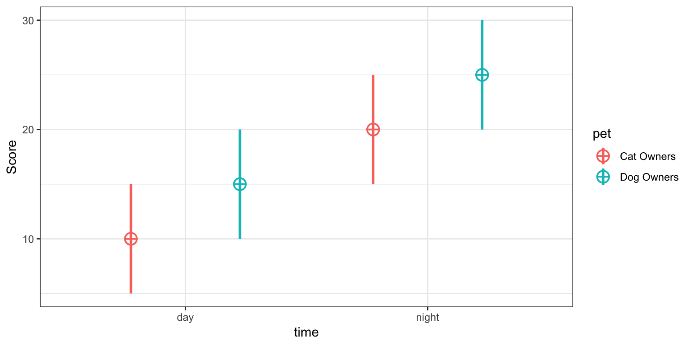
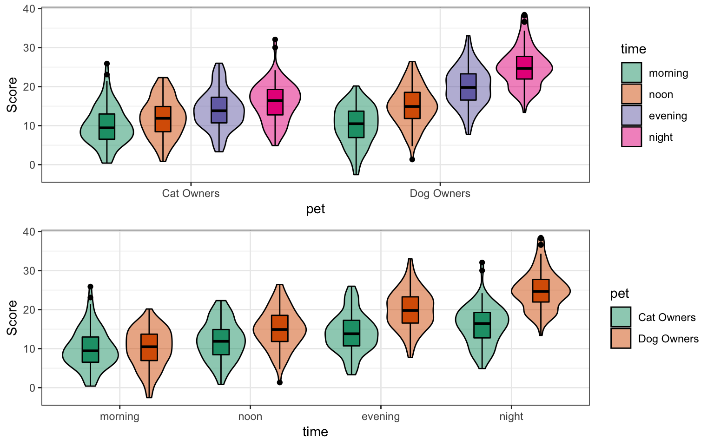

It is useful to be able to simulate data with a specified structure. The faux package provides some functions to make this process easier. See the vignettes for more details.
Installation
You can install the newest version of faux from GitHub with:
Because faux is still in early development, some features will break in future versions. Include sessioninfo::package_info() in your script to list the versions of all loaded packages.
Quick overview
Simulate data for a factorial design
between <- list(pet = c(cat = "Cat Owners",
dog = "Dog Owners"))
within <- list(time = c("morning",
"noon",
"evening",
"night"))
mu <- data.frame(
cat = c(10, 12, 14, 16),
dog = c(10, 15, 20, 25),
row.names = within$time
)
df <- sim_design(within, between,
n = 100, mu = mu,
sd = 5, r = .5)

Default design plot
p1 <- plot_design(df)
p2 <- plot_design(df, "pet", "time")
cowplot::plot_grid(p1, p2, nrow = 2, align = "v")

Plot the data with different visualisations.